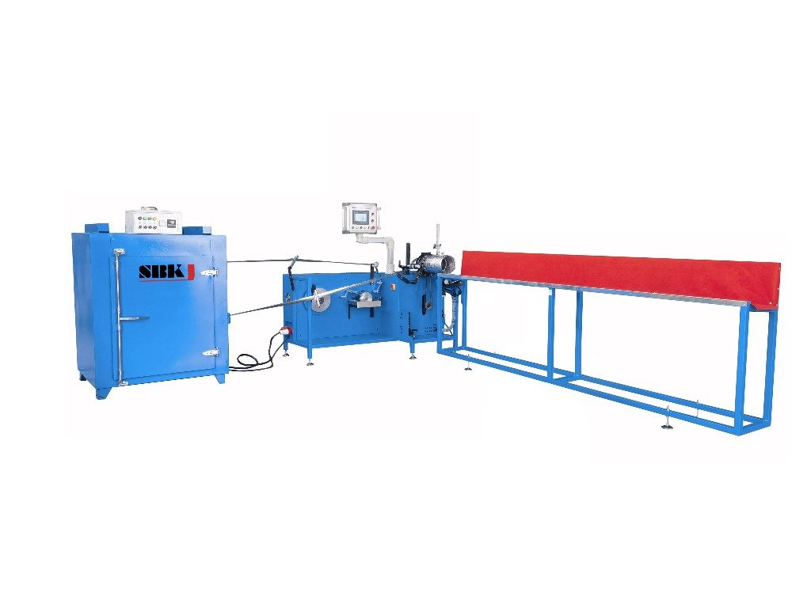
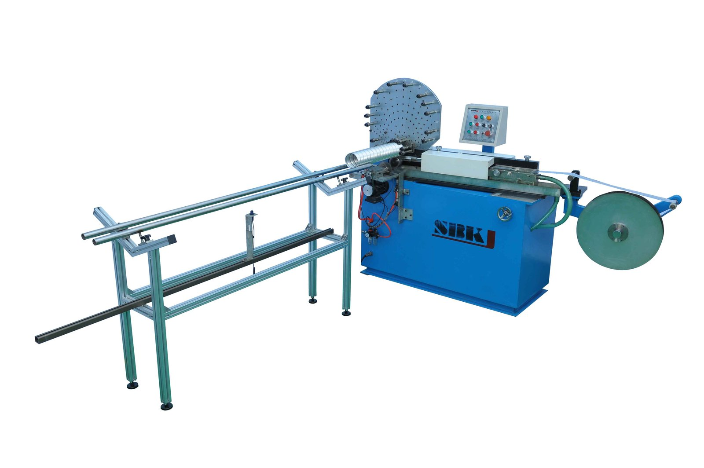
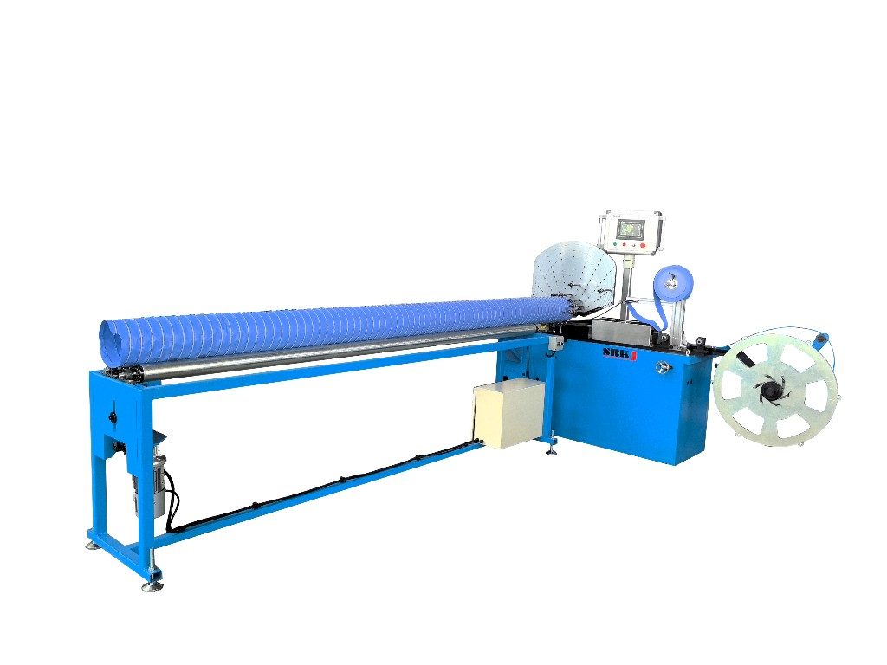
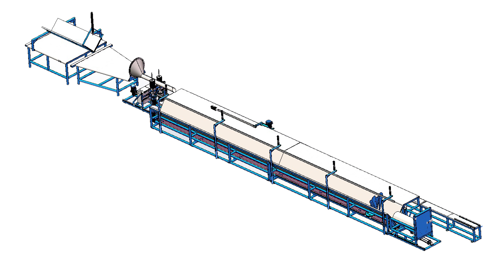
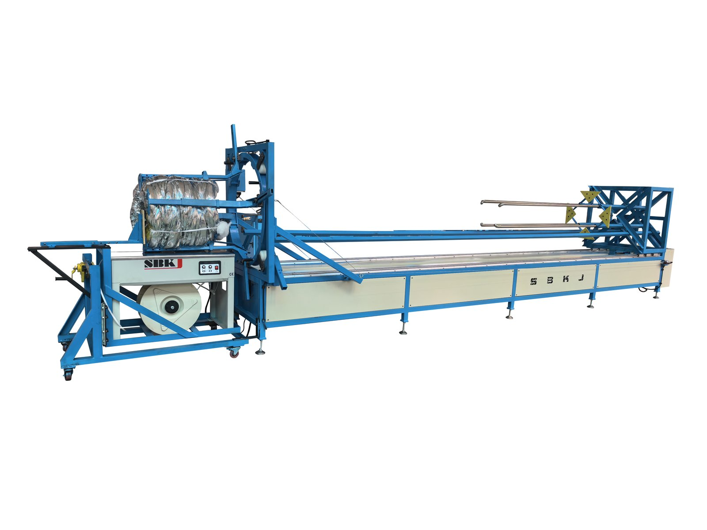
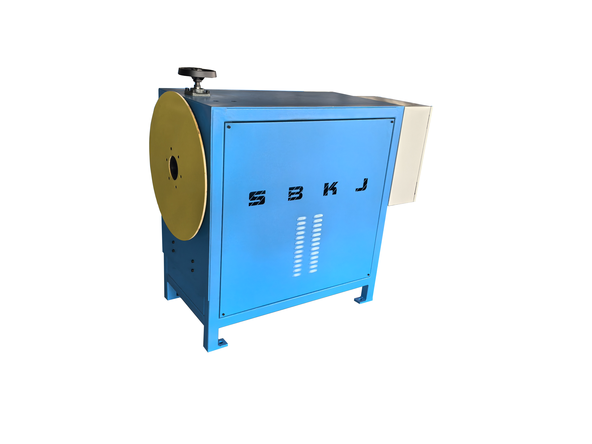
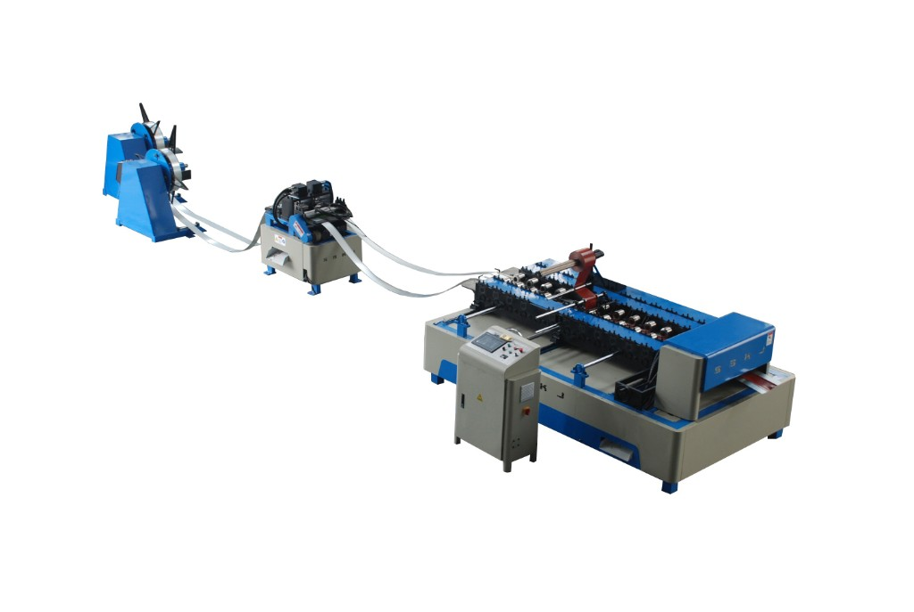

Flexible & insulated duct
Flexible Duct and Insulated Duct Machinery
Aluminum flexible duct forming (SBLR series), insulation, shrinking, canvas duct forming and flex connector machines.
Overview
Flexible duct is the last metre (sometimes the last few metres) of an HVAC system — the flexible connection from the rigid trunk to the diffuser, or the short bridge across a vibrating plant. Taokron builds the full range of machines for fabricating flexible duct in-house, starting with the SBLR-600 and SBLR-600A aluminum flexible duct forming machines (the shop workhorses for round aluminum flex), the SBLF-500 aluminum duct forming machine, the canvas flexible duct forming machine for fabric-walled flex, the flexible duct insulation machine that wraps a rigid core with fiberglass and an outer jacket, the flexible duct shrinking machine that locks the assembly together, and the flex duct connector machine for producing sleeves and end-fittings. Buyer profile: flexible duct wholesalers, HVAC material manufacturers, and large contractors who prefer to make their own flex rather than buy finished product from a third party.
Machines in this category
Click any machine to view full specifications, video and datasheet.

Aluminum Flexible Duct SBLR-600
Aluminum flex forming line, standard

Aluminum Flexible Duct SBLR-600A
Advanced version with upgraded feed

Aluminum Duct Forming Machine SBLF-500
Light-gauge aluminum forming

Canvas Flexible Duct Forming Machine
Fabric-walled flex

Flexible Duct Insulation Machine
Fiberglass wrap & jacket

Flexible Duct Shrinking Machine
Shrink/lock assembly

Shrink Tube Machine
Polymer jacket shrinking

Flexible Duct Connector Machine
End-sleeves & couplings

Stainless Duct Forming Machine
Stainless flexible duct variant
Specifications at a glance
Compare the flagship models in this category. Full specifications are on each individual product page.
| Model | SBLR-600 | SBLR-600A | SBLF-500 | Insulation Machine |
|---|---|---|---|---|
| Max diameter | Φ600 mm | Φ600 mm | Φ500 mm | Φ500 mm |
| Strip thickness | 0.08-0.15 mm Al | 0.08-0.15 mm Al | 0.1-0.2 mm Al | matches core |
| Speed | 8-12 m/min | 10-15 m/min | 6-10 m/min | 3-6 m/min |
| Drive | Servo | Servo | Electric | Electric |
| Length mode | Cut-to-length | Cut-to-length | Continuous | Continuous |
How to choose
If you are producing standard round aluminum flex up to Φ600 mm, the SBLR-600 is the baseline machine and what most customers order. The SBLR-600A is the upgraded version with faster servo feed and higher daily output — choose it when your sales volume justifies the premium. SBLF-500 is the right choice if your product mix is heavier aluminum (up to 0.2 mm) or if you need a slightly different geometry. For canvas or fabric-walled flex, the canvas flexible duct forming machine is a dedicated unit — it is not interchangeable with the aluminum lines. If you plan to sell pre-insulated flex (which is where the margin is), budget the insulation machine and the shrinking machine together so you can produce the full assembly in one shop without outsourcing the insulation step.
Standards and compliance
UL 181 Class 1 air duct / air connector (U.S.), EN 13180 (ventilation for buildings — flexible ducts), EN 13180. Insulation layers meet ASTM E84 Class A when ordered with the appropriate fiberglass and jacket materials.
Frequently asked questions
What is the difference between SBLR-600 and SBLR-600A?
Both machines produce aluminum flexible duct up to Φ600 mm. The SBLR-600A has an upgraded servo feed system that increases line speed by roughly 30% and improves consistency on thinner foils. For high-volume producers the A-model pays back quickly; for low-volume or development work, the baseline SBLR-600 is sufficient.
Do you supply the aluminum foil strip?
No — Taokron supplies only the machinery. We provide the exact aluminum foil specification (thickness, width, temper, coating) during engineering, and we can recommend suppliers in your region.
Can the insulation machine handle different core diameters?
Yes. The insulation machine is set up with changeable mandrels and wraps the fiberglass layer continuously as the core passes through. Diameter changeover typically takes 15-30 minutes depending on how different the new mandrel is from the previous one.
What certifications does the finished flexible duct meet?
The certification is a property of the finished product, not the machine — it depends on the aluminum, fiberglass and jacket materials you specify. With the right materials, SBLR-600 output can meet UL 181 Class 1 and EN 13180. We work with customers during commissioning to hit their target certification.
Workshop integration patterns
A complete flex duct cell from Taokron runs as a tight U-shape on a single bay. Aluminium foil decoiles from the SBLR-600 or SBLF-500 forming station; the helix is wound continuously and cut to length. The next station is the insulation wrapper, which adds the fibreglass and outer jacket. Then the shrink tube machine seals the assembly, and the connector station produces the matching end-sleeves. The whole cell needs only 1–2 trained operators and roughly 80 m² of floor area. Most Taokron flex customers run two parallel cells — one for insulated commercial flex and one for uninsulated residential — sharing crane and packing stations between them.
Buyer playbook
Flex duct buyers we work with most often share three traits. They are vertically integrating — they sell finished flex duct to wholesalers or contractors and want to capture the manufacturing margin instead of importing finished product. They start with a single SBLR-600 line, prove the market, then add the SBLR-600A and an insulation/shrinking pair as volume grows. And they treat the aluminium foil specification as the single most important variable — Taokron engineers spend more time on coil specs with new flex customers than on machine configuration, because the wrong foil temper can ruin the shop's output even on a perfectly built machine.
Related categories
Buyer's guides & pricing
Comparing suppliers or budgeting a line? These vendor-neutral guides name the real manufacturers and give realistic 2026 price ranges.
Ready to specify your line?
Send us the project brief — Taokron engineers respond within 12 hours with a sized quotation and GA drawing.
Get a quotation in 12 hoursPage reviewed by Taokron Engineering & QA · Last verified